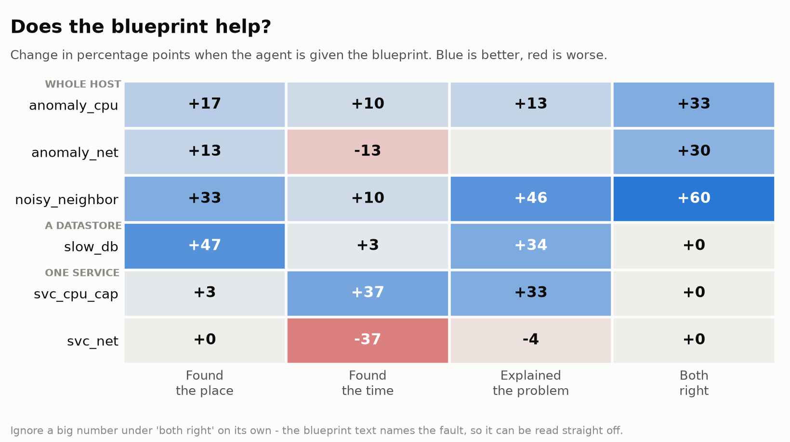

StrataTrace · Brock University · 23 September 2026
We collected labelled fault injections from two microservice applications, gave an LLM agent nothing but the kernel trace, and measured what it could work out. The useful part is where it failed, and why.
Observability costs money to collect and keep. So: which telemetry do you actually need, and what can an automated agent do with it?
We answer that by ablation. Collect four modalities under a known, labelled fault, then give the agent a subset and measure what it gets right. This page covers the first subset: kernel traces only. No metrics, no logs, no distributed traces.
The agent is never told that an incident happened, when it was, or where to look. It gets a raw LTTng trace and seven read-only tools, and has to produce what went wrong, where, and when. Ground truth lives only in the scorer — nothing the agent can reach ever sees it.
The same split appears on both applications, which were collected independently and share no code.
| Fault | Scope | Sock Shop | Train Ticket |
|---|---|---|---|
| Host CPU saturation | whole host | 55/60 | 54/60 |
| Host network degradation | whole host | 50/60 | 52/60 |
| Noisy co-tenant | whole host | 40/60 | 55/60 |
| Slow datastore | one service | 24/60 | 3/60 |
| Service CPU cap | one service | 1/60 | 0/60 |
| Service network path | one service | 0/60 | 0/60 |
The obvious reading is that a kernel trace cannot localise a fault to one service. That reading turned out to be wrong, and finding out why is the rest of this page.
Every one of these looked like a finding about what kernel traces can do. None of them was.
1 · The reply cap deleted the answer
Tool results were truncated to 6,000 characters with a plain string slice of the JSON. All 3,827 truncated results were unparseable — cut mid-number. Worse, a prefix slice doesn't sample a result, it deletes late fields entirely.
The tool that lists containers returns two lists. The second reached the model in 4.7% of 742 calls. Its usage notes reached it in 0%.
That second list is where a container that was already running appears. An injected stress process spawns, so it lands in the first. The scores split exactly along that line — which is the entire host-wide versus per-service result above.
2 · Raw lines were cut before the field that mattered
Our trace index kept 400 characters per event line. Network event lines average 913 and carry the TCP header starting around character 660. Every sequence number — the one thing that identifies a retransmission — was past the cut.
3 · A pandas flag dropped 23 million events
read_csv(comment="#") treats # as a comment start
anywhere in a line. The JVM names its garbage-collector threads
GC Thread#7. On one Train Ticket run that silently discarded
594,066 rows carrying 23,013,384 events.
It looked healthy because Sock Shop has no # in any process name, so numbers
matched exactly there and were 2% low on Java applications only.
4 · The scorer credited any answer as correct
Asked "which container?", the scorer accepted any container id as right without checking it was the right one. Harmless — until we added a step telling the agent to rank containers and name one. Then "rank them and pick the lowest" would have scored correct whether the ranking worked or not.
Caught one commit before the run that would have measured it.
The transferable part
Three of these produced no error, no warning, and no failed run. They produced plausible worse numbers. Before concluding what a model can or cannot do, check what it actually received and what it was allowed to say.
The per-service network fault injects 150 ms delay and 4% loss on one container's interface. Summing network events per container, baseline against the true injection window:
| Application | Injected container | Median container | Separation |
|---|---|---|---|
| Sock Shop, 3 runs | 0.155–0.184 | 0.63–0.73 | 3.8–4.1× |
| Train Ticket, 3 runs | 0.087–0.130 | 0.69–1.29 | 7.9–9.9× |
Six of six. One container's traffic collapses while everyone else's holds steady — in data the agent already had, in a column it already read.
A blueprint is a diagnostic procedure with the numbers behind each check measured on our own data. Nothing enters one until it has been verified — a validator rejects any check with no measurement behind it.
We added the per-container ranking to the network blueprint, then re-ran the full published design: 3 incidents × 2 arms × 2 asks × 5 repeats, 120 cells per fault.
| Fault | Published | With blueprint | Without |
|---|---|---|---|
| Service network path | 0/30 | 10/30 | 1/30 |
| Service CPU cap | 0/30 | 6/30 | 1/30 |
33% against 3%, and 20% against 3%. That is the effect the study's arm design exists to detect, and it is the first time a per-service fault has shown one.
Not solved — 10 of 30 is a third. But it moved off zero for a reason we measured before we wrote it down.

On the host network fault the agent given the blueprint found the incident window less often than the agent given nothing — because the blueprint's deciding check was a threshold on a rate the deployed tools could not compute. The agent could see the signal, could not satisfy the check as written, and honestly refused to conclude.
A blueprint whose deciding check is a threshold on a quantity the tools cannot compute will make an agent abstain, even when the signal is plainly visible. Every thresholded check now needs a qualitative fallback.
The natural statistic is wrong twice over. A throttled container's CPU falls to 40% of baseline while the median container falls to 18% — because when one service stalls, the whole application slows and everything else loses more. Ranking by biggest drop put the injected container at #15 of 18.
What works is the opposite shape: a quota is a ceiling, so the throttled container is the one whose CPU stops varying. 3 of 3.
| Application | Cap | CPU used before | Throttled, of 120s |
|---|---|---|---|
| Sock Shop | 0.2 | 0.514 | 522 s |
| Train Ticket | 0.2 | 0.004 | 1.6 s |
The cap is fifty times what that service uses, so it almost never binds. After the fix, 43 of 60 runs correctly reported no fault — up from 18. The agent is right, and our window metric scores it as failing.
Two consequences
That fault family is miscalibrated and cannot be reported as a comparable arm. And a metric that rewards naming a time window punishes an agent for correctly identifying a non-event — abstained and wrong have to be separated in the headline.
Hardest condition we have: the agent is told nothing — not that an incident occurred, not when, not where.
WHERE java in pid_ns 4026532538 (container)
WHEN 17:14:06 - 17:15:58
FAULT service_network confidence 0.87
EVIDENCE combined network-event ratio 0.106x baseline (923,111 -> 97,981)
while CPU runtime stayed near baseline at 0.915x (32.3s -> 29.6s).
Only clear queue-drop outlier: 78,260 net_dev_queue vs 6,570
net_dev_xmit (11.9x), while other containers stayed near 1.0x.
GROUND TRUTH svc_net_carts on docker-compose_carts_1
eth0, delay 150ms, jitter 40ms, loss 4%
17:14:03Z -> 17:16:04Z
SCORED container correct - window hit - IoU 0.926
The kernel records no service name. pid_ns is one number per container, so
naming the container is the most precise answer this data allows. The agent wrote and ran its
own analysis code to get there.